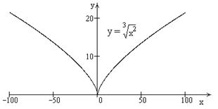

П 19ТУ№8.
Функция не
дифференцируема в точке  , так как
при
, так как
при  ,
график функции имеет в точке 0 вертикальную касательную, функция является
убывающей при , возрастающей при , в точке функция
имеет минимум (такая точка графика называется точкой возврата).
,
график функции имеет в точке 0 вертикальную касательную, функция является
убывающей при , возрастающей при , в точке функция
имеет минимум (такая точка графика называется точкой возврата).
, так как
при ,
график функции имеет в точке 0 вертикальную касательную, функция является
убывающей при , возрастающей при , в точке функция
имеет минимум (такая точка графика называется точкой возврата).